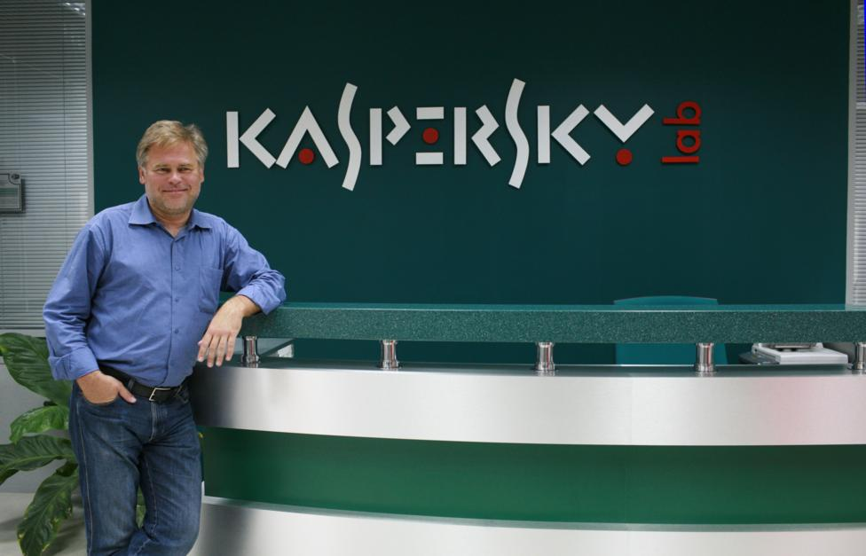

Биография
Date:
Краткая информация

Евгений Касперский (родился 4 октября 1965 года) — российский эксперт по
кибербезопасности и предприниматель. Он наиболее известен как соучредитель и
генеральный директор Kaspersky Lab, международной компании по кибербезопасности.
Начало пути
Путь Касперского начался с изучения математики и информатики в Высшей школе КГБ (ныне
Институт криптографии, телекоммуникаций и информатики). Работая над проектом в
научно-исследовательском институте, он обнаружил и проанализировал вирус, что
пробудило в нём интерес к кибербезопасности.
Основная деятельность
.png)
В 1997 году он стал соучредителем «Лаборатории Касперского», которая превратилась в
одного из ведущих мировых поставщиков антивирусного программного обеспечения и
средств интернет-безопасности. Компания известна своим тщательным анализом и
выявлением киберугроз, а также тем, что находится на передовой кибербезопасности.
Помимо работы в компании, Касперский активно выступает за международное
сотрудничество в борьбе с киберпреступностью и часто комментирует вопросы
кибербезопасности. Его исследования и работа его компании внесли значительный вклад в
понимание и защиту от различных компьютерных вирусов, вредоносных программ и
кибератак. Он также получил множество наград, в том числе степень доктора наук в области
компьютерной безопасности в Плимутском университете в 2012 году.
«Зачем создавать проблемы себе и другим, если можно их избежать?
Евгений Касперский
Принцип, который я декларирую, — когда ты уходишь, в спину тебе
должны улыбаться»
Заключение
Подводя итог, можно сказать, что Евгений Касперский — выдающаяся фигура в сфере
кибербезопасности, известная своим опытом, предпринимательским успехом в Kaspersky
Lab и стремлением бороться с глобальными киберугрозами.